ZIA, ZPA, ZDX, Client Connector and Branch/Cloud Connector APIs — plus ZIdentity fundamentals and OneAPI architecture.
One identity. One gateway. Every Zscaler service.
ZIdentity and OneAPI eliminate the complexity of managing separate credentials and endpoints for each Zscaler product. Authenticate once, access everything.
💭THINK FIRST · ZIA APIs
ZIA gives you programmatic control over your organization's internet security policies — every URL filtering rule, every user configuration, every security policy. Think about what it means for a security team when those controls are accessible through an API call from a script.
ZIA's Cloud Service API is "limited availability" and requires contacting support to enable. Why would Zscaler restrict access to certain APIs rather than making them universally available to all admins?
The Sandbox Submission API lets you submit files for behavioral analysis. At what point in a security workflow would you want this to happen automatically — without a human analyst initiating each submission?
Third-Party App Governance API manages SaaS app consent. Why does controlling which SaaS apps employees can use need to happen at the network level rather than just through IT policy or HR rules?
Q1 — MODEL ANSWER
Limited-availability APIs like Cloud Service give powerful, low-level control that can break a tenant if misused — so Zscaler gates them behind a support conversation to confirm the customer actually needs that capability and understands the operational risk. It also lets Zscaler track adoption, support edge cases properly, and stagger rollout on infrastructure that wasn't designed for unbounded admin self-service. Universal availability would turn a niche power-user feature into a default attack surface.
Q2 — MODEL ANSWER
You'd want automatic Sandbox submission when a file is downloaded or attached but hasn't been seen by the cloud before — that's the "unknown file" moment where human-in-the-loop is too slow. Triggering Sandbox from a SIEM rule, an EDR detection, or an inline policy means the verdict comes back before the file ever executes on an endpoint. The whole point of automation here is closing the gap between exposure and analysis to near-zero.
Q3 — MODEL ANSWER
IT policy and HR rules only work if employees follow them; the network layer enforces them whether the user complies or not. A user can ignore a "don't sign up for random SaaS apps" memo, but they can't OAuth-grant a shadow SaaS app if the Third-Party App Governance API has blocked consent at the proxy. Network-level enforcement converts policy into a technical control instead of a request.
ZIA APIs
Zscaler Internet Access APIs
ZIA APIs provide programmatic access to Zscaler's cloud security platform, enabling developers and administrators to automate security policies and configurations.
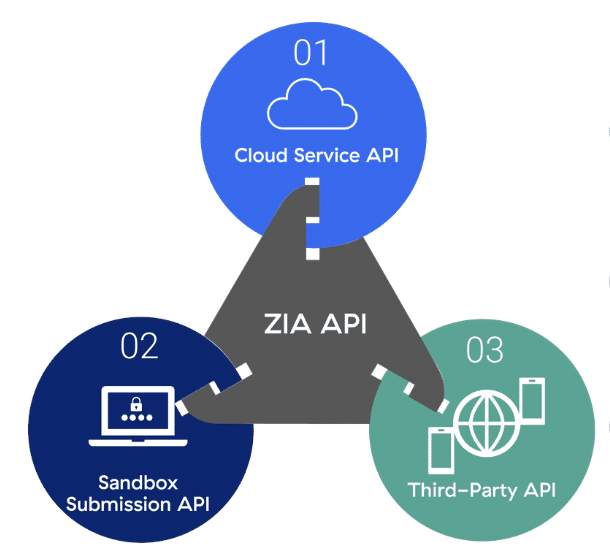
ZIA API consists of three main components: Cloud Service API, Sandbox Submission API, and Third-Party App Governance API
01 Cloud Service API
Communicate with cloud-based services and transfer data. Limited availability — contact Zscaler Support to enable.
02 Sandbox Submission API
Submit files for behavioral analysis in Zscaler's cloud sandbox to detect zero-day threats.
03 Third-Party App Governance API
Search catalog by name, App ID, or URL. Includes consent management and marketplace link access.
i
ZIA USE CASES
ZIA API enables automation of URL filtering, policy management, user and group configurations, traffic forwarding, and reporting. Prerequisites: Add an API key — only admins with the API Key Management role can create these.
🧠
MENTAL NOTE
ZIA API = 3 components: (1) Cloud Service API — limited, contact Zscaler Support to enable; (2) Sandbox Submission API — submit files for zero-day behavioral analysis; (3) Third-Party App Governance API — SaaS consent + catalog search. Only admins with the API Key Management role can create ZIA API keys — exam gotcha.
Analogy
ZIA API is like giving a security guard a programmable rulebook. Instead of checking each visitor manually, you hand the guard an API call that says "anyone heading to gambling sites — turn them around; anything that looks like malware — send it to the inspection lab." The guard follows the rules exactly, at scale, without fatigue.
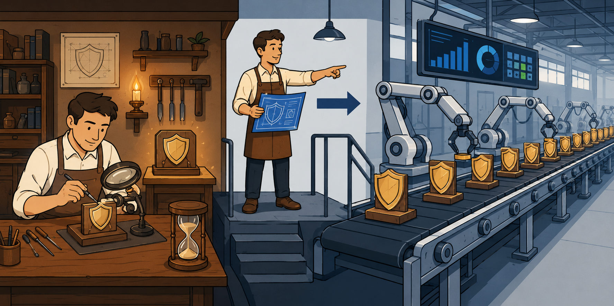
📷 A1.png — add this image to the folder
Flat minimalist cartoon illustration of a security checkpoint used as an analogy for the ZIA API as a programmable rulebook. One wide horizontal scene. In the center, a friendly uniformed security guard stands at a futuristic gate holding a glowing tablet-style rulebook with neat bullet points and small icons (a dice for gambling, a tiny bug for malware, a green checkmark for safe traffic). A queue of diverse cartoon visitors flows toward the gate from the left, each visitor labeled subtly with destination icons floating above their head (one with a dice symbol, one with a bug symbol, one with a regular browser symbol). The guard directs three pathways: one visitor is gently turned around with a polite stop gesture (gambling-bound), one is sent toward a glass-walled inspection lab on the right with magnifying glasses and lab equipment (malware-bound), and others pass through smoothly into a bright corporate hallway. The guard appears confident and tireless — small clock and infinity icons hint at 'at scale without fatigue.' Clean geometric shapes, flat illustration style, bold outlines, soft lighting, simple cartoon characters, no text labels, educational infographic feel, modern tech-analogy aesthetic.
ASK A QUESTION
MY NOTES
💭THINK FIRST · ZPA APIs
ZPA provides access to private applications without putting users on the corporate network. Its API lets you automate everything you'd otherwise click through in the admin portal. Think about which of the 10 manageable features would benefit most from automation at scale.
Provisioning keys for App Connectors can be created via API. Why would you want to automate key creation rather than manually generating one for each new branch deployment?
SCIM attribute management can be automated via API. What happens to user access if SCIM deprovisioning is delayed when an employee leaves — and why does response time matter in that specific scenario?
Version Profiles control which App Connector version runs. Why would you want programmatic control over software versioning rather than just enabling auto-updates for everything?
Q1 — MODEL ANSWER
Manual key creation doesn't scale and introduces human error: someone forgets to rotate, someone pastes the wrong key, someone emails a key insecurely. Automating provisioning-key creation lets a Terraform run, a CI pipeline, or a zero-touch branch image fetch its own key, register the connector, and start passing health checks in minutes — without an admin ever touching the portal. It also produces an audit trail that's impossible to forge.
Q2 — MODEL ANSWER
Every minute between an employee's exit and their SCIM deprovisioning is a window where ZPA still trusts their session token to reach private apps — payroll, HR, source code, customer data. In an involuntary termination scenario, that's the highest-risk moment for sabotage or data exfil, so seconds matter. Automating SCIM via API closes that window in near real time instead of waiting for a help-desk ticket to be worked the next morning.
Q3 — MODEL ANSWER
Blanket auto-updates assume every connector can tolerate a same-day version change, which isn't true for connectors fronting critical apps where you want to soak a release in dev/staging first. Programmatic Version Profile control lets you pin production connectors to a known-good build, push the new build to canary connectors via API, then promote — the same staged-rollout discipline you'd apply to any other production software.
ZPA APIs
Zscaler Private Access APIs
ZPA APIs provide programmatic access to manage ZPA features, allowing developers and administrators to automate and control ZPA deployments.
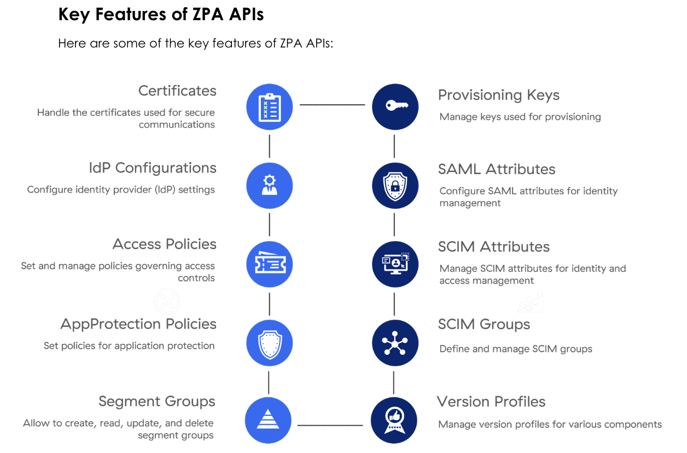
10 key feature areas manageable through ZPA APIs
Certificates
Manage SSL/TLS certificates for ZPA deployments.
Provisioning Keys
Create and manage App Connector provisioning keys.
Manage SAML attribute mappings for authentication.
Access Policies
Create and update application access policies at scale.
SCIM Attributes
Manage SCIM provisioning attributes.
AppProtection Policies
Configure inline application inspection policies.
SCIM Groups
Automate SCIM group management and synchronisation.
Segment Groups
Manage application segment group configurations.
Version Profiles
Control App Connector version profile assignments.
★
ZPA USE CASE DEMO
ZPA API enables automation of: managing application access policies, configuring App Connector groups, retrieving user device information, monitoring system health. Demo: Use Postman REST client with ZPA Postman collection to create an App Connector group using the customer ID from the ZPA Admin Portal.
🧠
MENTAL NOTE
ZPA API manages 10 areas: Certificates, Provisioning Keys, IdP Configurations, SAML Attributes, Access Policies, SCIM Attributes, AppProtection Policies, SCIM Groups, Segment Groups, Version Profiles. Demo creates an App Connector group — requires Customer ID from ZPA Admin Portal → Administration → Company Details.
Analogy
App Connectors are like unmarked service entrances in a corporate building. Visitors never see them. Each connector makes an outbound call — "I'm ready to accept work" — and traffic flows inward through that channel. The API lets you automate the creation and management of those entrances across all your buildings simultaneously.
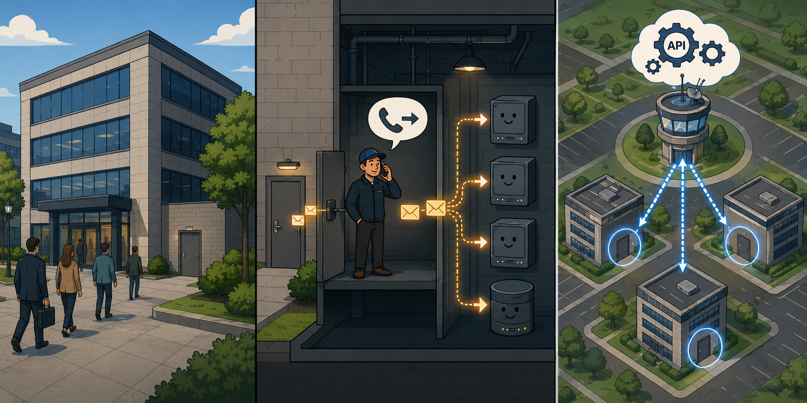
📷 A2.png — add this image to the folder
Flat minimalist cartoon illustration of a corporate campus with hidden service entrances used as an analogy for App Connectors. Wide horizontal scene with two layers: the front of the building and a cutaway side view. Front view (left side): a sleek modern office building with the public main entrance — visitors walk past, none can see the unmarked service door tucked discreetly along the side wall. The service entrance is plain, unlabeled, blending into the brick. Side cutaway (middle): show a small worker (the App Connector) standing inside near the service door, making an outbound phone-call gesture (a speech bubble with a telephone icon labeled with an outward arrow), signaling 'ready to accept work.' Once the call connects, traffic packets (small glowing envelopes) flow inward through that channel from the outside toward internal applications represented as friendly server icons. Right side: a top-down map showing three identical buildings each with their own hidden service entrance, all controlled simultaneously by a central control tower with API gear icons floating above it — arrows radiate outward to all buildings showing automated management at scale. Clean geometric shapes, flat illustration style, bold outlines, soft lighting, simple cartoon characters, no text labels, educational infographic feel, modern tech-analogy aesthetic.
ASK A QUESTION
MY NOTES
💭THINK FIRST · ZDX & CLIENT CONNECTOR APIs
ZDX measures the digital experience of your users — is Zoom actually working well for them, or is there latency they're struggling through? The API lets you pull this data programmatically. Think about what you could build if you had real-time experience scores for every user, automatically triggering actions.
ZDX + ServiceNow is the key integration example: a Zoom quality problem automatically creates a ticket. What does this tell you about the relationship between observability data and operational workflows?
Client Connector API provides device OTPs (one-time passwords). In what scenario would you need to retrieve OTPs for many devices at scale rather than one at a time?
Branch/Cloud Connector API includes Activation and Provisioning capabilities. What's the advantage of automating branch connector activation rather than doing it manually at each physical location?
Q1 — MODEL ANSWER
Observability data is only valuable if it triggers action — a dashboard nobody watches is wasted telemetry. The ZDX-to-ServiceNow pattern shows that the ZDX Score isn't just a metric to look at; it's an event that should automatically start the help-desk workflow before the user even calls IT. This collapses mean-time-to-detect and mean-time-to-resolve into the same step because detection itself files the ticket.
Q2 — MODEL ANSWER
OTPs are needed when a user has to disable Client Connector temporarily — for troubleshooting, for a personal hotspot situation, or during certain VPN handovers. At scale, you'd want to retrieve OTPs in bulk when staging a fleet of new laptops, building a self-service help-desk portal, or pre-generating recovery credentials during an outage. Doing it one device at a time through the UI is fine for ten users; it falls apart at ten thousand.
Q3 — MODEL ANSWER
Manual branch activation requires a technician at every site, which is impossible for organisations with hundreds of small offices or retail locations where no IT person is on-site. Automating activation lets you ship a pre-configured appliance, have it phone home, register against the API, and be ready for traffic — true zero-touch provisioning. The hardware becomes generic; the configuration becomes code.
ZDX & CLIENT CONNECTOR APIS
ZDX and Client Connector APIs
Zscaler Digital Experience (ZDX) APIs
ZDX APIs allow you to pull information about application accesses and health metrics. They provide a holistic approach to monitoring core application quality. A key integration example: Zoom + ServiceNow — use ZDX to look at endpoint health and automatically create tickets.
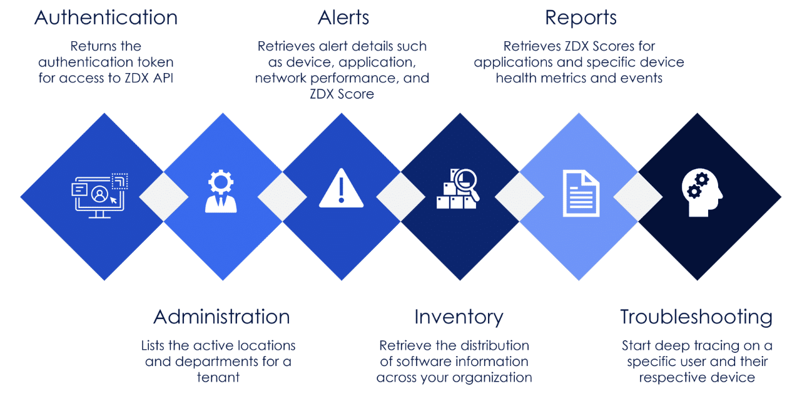
ZDX API feature areas: Authentication, Alerts, Reports, Administration, Inventory, Troubleshooting
Authentication
Returns authentication tokens for accessing ZDX APIs.
Retrieve ZDX Scores for applications and specific device health metrics and events.
Administration
Lists the active locations and departments for a tenant.
Inventory
Retrieves the distribution of software information across your organisation.
Troubleshooting
Start deep tracing on a specific user and their respective device.
Zscaler Client Connector APIs
The Zscaler Client Connector API provides programmatic access to manage various features of the Zscaler Client Connector. It provides functionalities to automate the deployment, configuration, and monitoring across user devices.
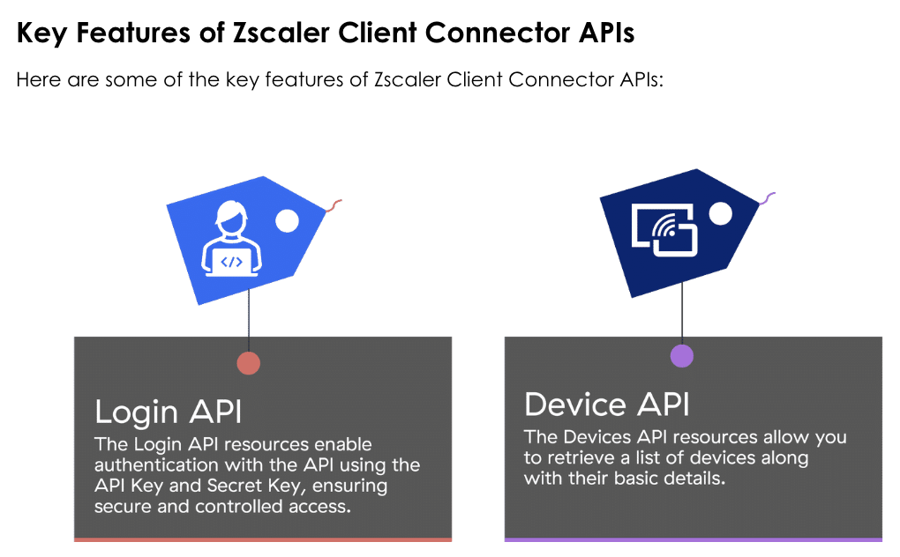
Client Connector API: Login API (authentication with API Key and Secret Key) and Device API (retrieve device list with basic details)
Zscaler Branch/Cloud Connector APIs
The Zscaler Cloud & Branch Connector API provides programmatic access to manage various features, enabling efficient management and integration.
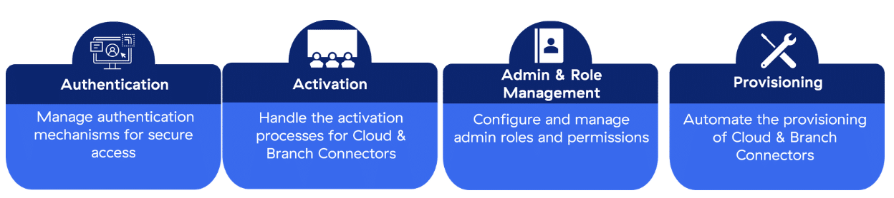
Branch/Cloud Connector API: Authentication, Activation, Admin & Role Management, Provisioning
🧠
MENTAL NOTE
ZDX API = 6 areas: Authentication, Alerts, Reports, Administration, Inventory, Troubleshooting. Client Connector = Login API + Device API (v1/getDevices returns all devices + OTP credentials). ZDX → ServiceNow (Zoom quality → auto-create ticket) is the canonical integration example — know it for the exam.
Analogy
ZDX APIs are like a health-monitoring wristband for your entire workforce. Instead of asking "is everyone OK?", the wristband continuously measures vitals (latency, packet loss, app performance scores) and automatically pages the doctor (creates a ServiceNow ticket) when readings go outside safe ranges — without anyone having to notice and manually escalate.
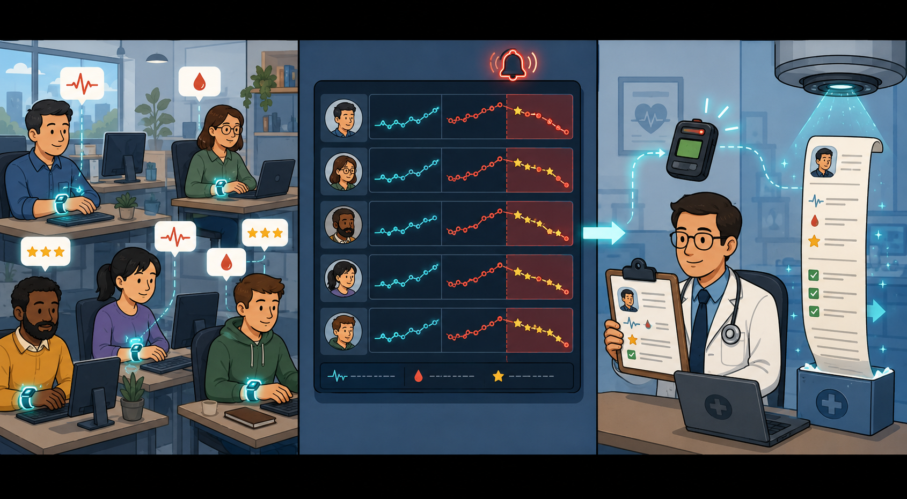
📷 A3.png — add this image to the folder
Flat minimalist cartoon illustration of fitness wristbands and automated medical care used as an analogy for ZDX APIs. One wide horizontal scene split into three connected zones. Left zone: a diverse group of cartoon employees at their desks wearing glowing health-monitoring wristbands; small floating vitals icons hover near each person (a heart-rate squiggle for latency, a tiny droplet for packet loss, a star rating for app performance score). The wristbands pulse with soft cyan light. Middle zone: a central dashboard screen shows graphs of the wristband readings climbing into a red 'outside safe range' zone with a small alert bell ringing. An arrow flows from the dashboard automatically into the right zone. Right zone: a friendly cartoon doctor instantly receives a pager-style alert and pulls up a 'ticket' clipboard with the worker's icon already filled in — no human had to notice or escalate. A small ServiceNow-style ticket scroll unrolls itself in mid-air. Calm clinical-meets-office atmosphere, supportive mood. Clean geometric shapes, flat illustration style, bold outlines, soft lighting, simple cartoon characters, no text labels, educational infographic feel, modern tech-analogy aesthetic.
ASK A QUESTION
MY NOTES
💭THINK FIRST · ZIDENTITY
Before ZIdentity, managing multiple Zscaler products meant multiple credential sets, multiple portals, and multiple ways for access to fall through the cracks when someone joined, changed roles, or left. Think about the security and operational risks that creates at enterprise scale.
If an admin has separate credentials for ZIA, ZPA, and ZDX — and they leave the company — what does IT have to do to fully revoke their access? How does ZIdentity fundamentally change that process?
SCIM automates deprovisioning when a user leaves. What happens during the gap between an employee's last day and when IT manually removes their access — and why does that window create risk?
Source IP restrictions in ZIdentity let you lock admin access to specific IP ranges. What attack does this defend against — what specific threat does restricting source IPs stop?
Q1 — MODEL ANSWER
Without ZIdentity, IT has to log into every product portal separately and delete the admin from each — and if they miss one, that admin retains backdoor access indefinitely. ZIdentity collapses that to a single deactivation in the unified identity layer, which propagates to ZIA, ZPA, ZDX, and ZCC at once. It turns offboarding from a checklist that can fail silently into a single, auditable event.
Q2 — MODEL ANSWER
During that gap, the departing user still has live sessions, valid tokens, and policy entitlements — which is exactly the period when disgruntled or financially motivated insiders do the most damage. Even with no malice, dormant accounts are prime takeover targets for attackers who phished credentials weeks earlier and are waiting for the right moment. SCIM closes the gap to whatever the IdP-to-Zscaler sync latency is, typically seconds rather than days.
Q3 — MODEL ANSWER
Source IP restrictions defend against credential theft — phishing, infostealer malware, or a leaked password ending up in a credential dump. Even if an attacker has the right username, password, and MFA-bypass technique, the ZIdentity gate refuses the login because the request isn't coming from the corporate office or the bastion IP range. It turns the admin console from a globally reachable target into something only reachable from a known network perimeter.
ZIDENTITY FUNDAMENTALS
What is ZIdentity?
ZIdentity is a unified identity service for Zscaler that centralises and simplifies identity management, user authentication, and entitlement assignment for users across all Zscaler services (ZIA, ZPA, ZDX, etc.).
With ZIdentity, a single authentication allows users to seamlessly access all Zscaler services used by their organisation — no more managing multiple passwords for separate portals.
Why ZIdentity is Required: Previously, all Zscaler services were managed through individual administrative portals with different login credentials. In cases where you subscribed to multiple services or managed across multiple organisations, you required separate credentials for each. ZIdentity eliminates this fragmentation.
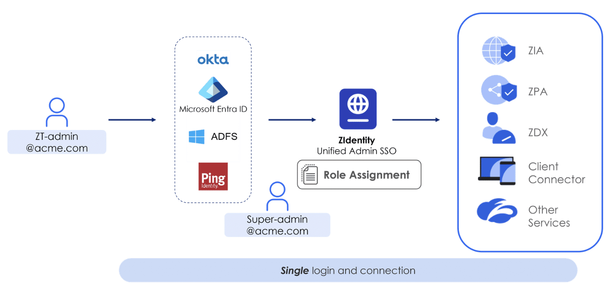
ZIdentity Unified Admin SSO: single login through Okta, Microsoft Entra ID, ADFS, or Ping Identity connects to ZIA, ZPA, ZDX, Client Connector, and other services
Key Features of ZIdentity
Seamless Access
Single set of credentials for all Zscaler services.
Secured MFA Auth
MFA required by default. Supports SMS OTP, email OTP, Google Authenticator (TOTP), FIDO.
Easy Admin Role Management
Centralised role assignment across all Zscaler products.
SAML JIT/SCIM Provisioning
Automate user provisioning and deprovisioning via SCIM.
Source IP Restrictions
Restrict admin access to specific IP addresses for security.
Audit Reports
Comprehensive audit trail of all admin actions across services.
Authentication & Provisioning in ZIdentity
ZIdentity uses OIDC (OpenID Connect) as the preferred method for authentication with Zscaler using SSO. SCIM automates user provisioning and deprovisioning, building on the OAuth 2.0 framework that allows an IdP to authenticate a user and pass credentials to ZIA and ZPA.
An example is gaining access to both ZIA and ZPA using the same credentials once instead of separately for each. When a user leaves an organisation, SCIM automatically deactivates them from all associated databases across all ZIA and ZPA tenants.
Analogy
ZIdentity is like an all-access employee badge for a multi-building corporate campus. Before ZIdentity, each building (ZIA, ZPA, ZDX) issued its own badge and had its own reader. ZIdentity replaces all building-specific cards with one universal badge — and when someone leaves, HR deactivates a single card instead of sending someone to revoke access at every building separately.
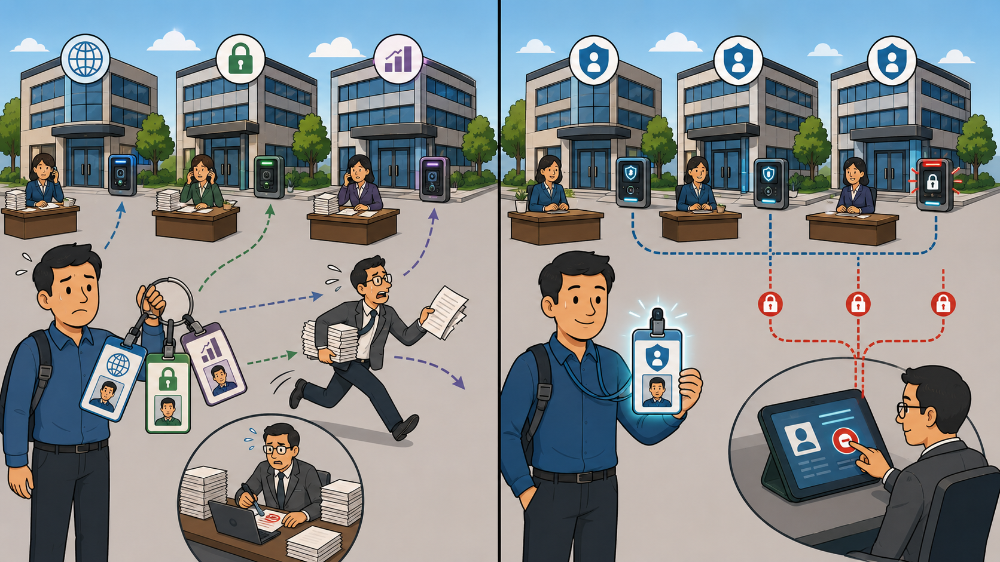
📷 A4.png — add this image to the folder
Flat minimalist cartoon illustration of a corporate campus and employee badges used as an analogy for ZIdentity. Two contrasting scenes arranged left-to-right in one wide composition. Scene 1 (Before ZIdentity): a single cartoon employee stands in front of three separate office buildings, juggling a thick keyring with three different mismatched badge cards (one stamped with a small globe icon for ZIA, one with a lock for ZPA, one with a chart for ZDX); each building has its own unique badge reader at the door, and a flustered receptionist at each building handles a separate stack of paperwork. A worried HR manager runs between all three buildings trying to revoke access manually. Scene 2 (After ZIdentity): the same employee proudly holds one sleek universal badge that glows; all three buildings now share a single elegant unified badge reader at every door, all linked to a central HR control panel. When HR clicks a single 'deactivate' button on a tablet, all three building doors lock simultaneously with synchronized red lights — instant universal revocation. Clean geometric shapes, flat illustration style, bold outlines, soft lighting, simple cartoon characters, no text labels, educational infographic feel, modern tech-analogy aesthetic.
🧠
MENTAL NOTE
ZIdentity = SSO + MFA (required by default, supports TOTP/FIDO/SMS OTP) + SCIM provisioning + centralized role management. OIDC = preferred for SSO authentication. SCIM = automates user provisioning and deprovisioning across ALL ZIA and ZPA tenants simultaneously. OAuth 2.0 = programmatic token-based access.
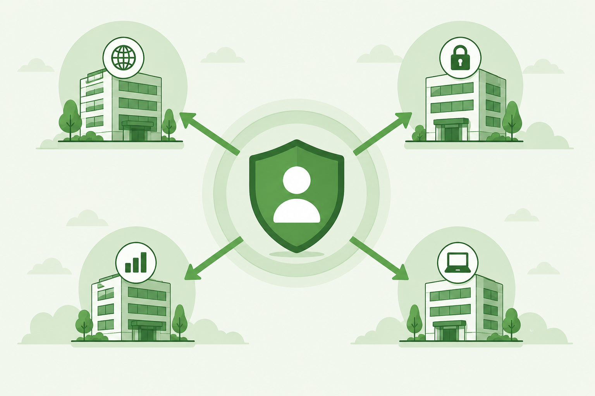
📷 1.png will appear here once you add it to this folder
[Generate: flat green illustration of a central ZIdentity shield/badge in the middle, with four radiating arrows pointing outward to building icons representing ZIA, ZPA, ZDX, and ZCC — representing a single identity controlling access to all four products, clean minimalist, no text labels]
ASK A QUESTION
MY NOTES
💭THINK FIRST · ONEAPI
Before OneAPI, writing automation scripts for Zscaler meant managing separate authentication flows, separate endpoint URLs, and different rate-limiting logic for each product. Think about what a "unified gateway" actually needs to do in order to make all products feel consistent to a script developer.
OneAPI acts as a gateway between your client and the actual backend APIs. What functions does this gateway need to perform that each backend used to handle independently — and why is centralizing those functions better?
"Globally distributed with GeoProximity routing" means your request goes to the nearest gateway. What performance problem does this solve — and what would happen to a script running in Sydney if all gateways were in the US?
"Cloud Agnostic" means a single endpoint for all product clouds. If Zscaler migrates a backend API to a new infrastructure, does your script need to change? What does this tell you about where complexity is absorbed?
Q1 — MODEL ANSWER
The gateway has to handle authentication and token validation, rate limiting, request routing, tenant access policy enforcement, caching, and consistent error formatting — all things each backend used to implement on its own with subtle differences. Centralising means one place to update OAuth flows, one rate-limit algorithm to reason about, and one place to instrument logging. For the client developer, it means every Zscaler API behaves the same way, which dramatically lowers the cognitive cost of integrating new products.
Q2 — MODEL ANSWER
GeoProximity routing solves the round-trip-latency problem: every API call has to traverse the physical distance between client and gateway, and on a chatty automation script doing thousands of calls, that latency compounds. A Sydney script hitting only US gateways would pay ~150ms per round trip, turning a 60-second job into a 10-minute one. Routing to a nearby Sydney/APAC gateway drops that to single-digit milliseconds and keeps performance predictable globally.
Q3 — MODEL ANSWER
No — your script keeps calling api.zsapi.net and the gateway transparently routes to the new backend. The complexity of cloud migration, version cutover, and backend topology is absorbed inside the OneAPI layer instead of leaking out to every customer's automation code. That's the whole value of a gateway abstraction: it makes change on the provider side invisible to the consumer.
ONEAPI OVERVIEW
What is OneAPI?
The OneAPI platform is a unified API platform for Zscaler, designed to deliver a consistent, intuitive, reliable, and high-performance API experience. It handles both private and public APIs at Zscaler and provides a Unified API Gateway that connects to backend APIs hosted by upstream platforms.
The Problem OneAPI Solves: In the traditional framework, each product had separate API credentials management, separate endpoints, and variations in common functionality like rate limiting. Users had to register, authenticate, and get tokens for ZIA, ZPA, and Client Connector separately — complex and error-prone.
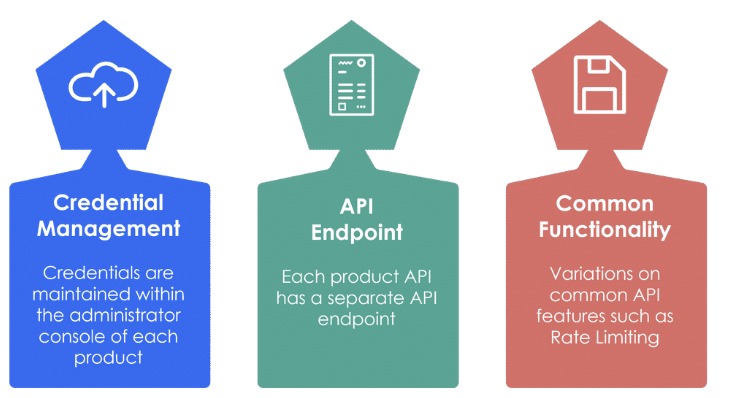
Traditional challenges: separate Credential Management per product, separate API Endpoints, and variations in Common Functionality such as Rate Limiting
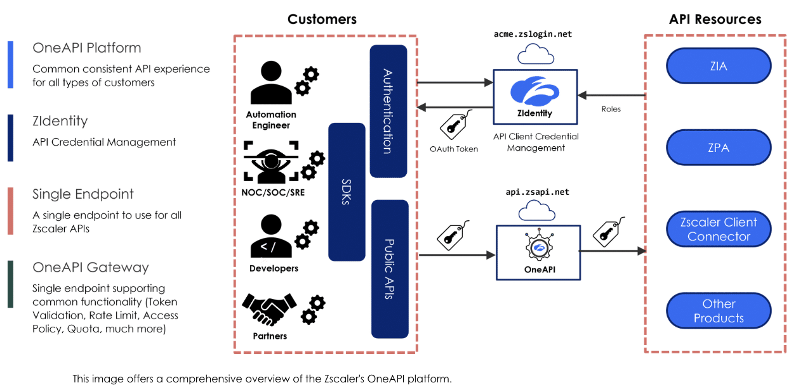
OneAPI Platform: single endpoint (api.zsapi.net) connects customers through ZIdentity authentication to ZIA, ZPA, Client Connector, and other products
Why OneAPI is Required
Zscaler OneAPI is a new framework that removes complexity and provides greater flexibility by giving automation an identity that is authorised to handle administration.
Consistent API Design
Same design patterns and experience across all products, with reliability and high performance.
Centralized Management
API auth, tenant access policies, rate limiting, caching, API lifecycle management — all in one place.
Reliability & Performance
Consistent cross-product API experience with enhanced support for automation and external integrations.
OAuth Authorization
Uses OAuth 2.0 framework to provide secure access to ZIA, ZPA, ZCC, and other services.
Controlled Access
Client Credentials OAuth flow — applications exchange credentials for tokens without user auth.
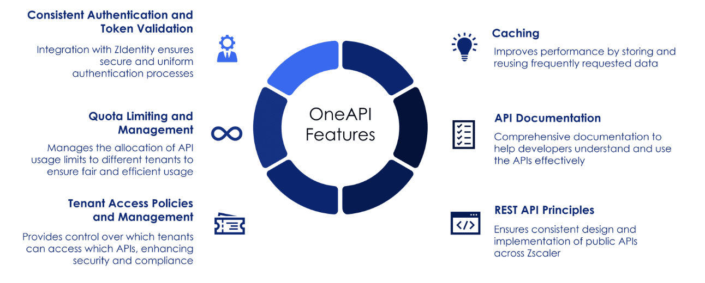
OneAPI Features: Consistent Authentication & Token Validation, Quota Limiting, Tenant Access Policies, Caching, API Documentation, REST API Principles
OneAPI: The Gateway Platform — Key Benefits
Globally Distributed
API gateways distributed across global regions. Low latency — requests processed at the nearest gateway.
Geographic Aware
Intelligently routes API requests to the nearest regional gateway using GeoProximity routing policies.
Cloud Agnostic
Single endpoint for all Zscaler product clouds. No need to manage multiple URLs or endpoints per product.
Authenticate Once
ZIdentity API Client Credentials (OAuth). One token provides access to multiple services.
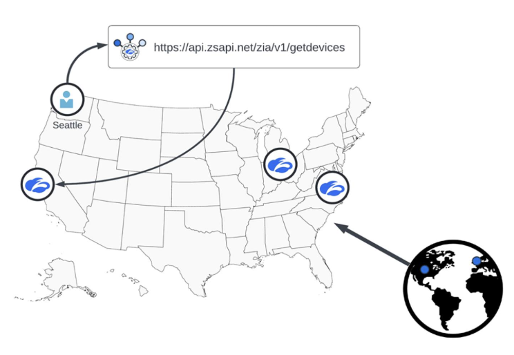
OneAPI routes requests to the closest regional gateway — reducing latency for global users
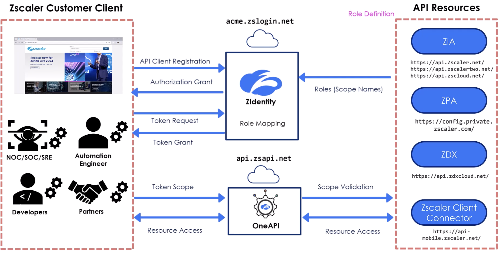
Complete OneAPI flow: API Client Registration and Token Request through ZIdentity → Token Grant → OneAPI Gateway enforces scope validation → API Resources (ZIA, ZPA, ZDX, Client Connector)
Analogy
OneAPI is like an international airport hub. Instead of flying direct between every pair of cities (fragmented, each route its own rules), all flights go through the hub (api.zsapi.net). The hub handles security screening (authentication), customs (rate limits), routing (GeoProximity), and connections to all destinations (ZIA, ZPA, ZDX, ZCC). You learn one airport, and every destination is reachable.
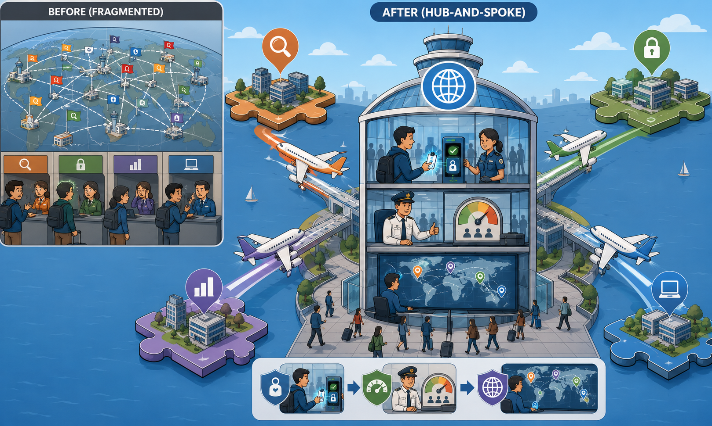
📷 A5.png — add this image to the folder
Flat minimalist cartoon illustration of an international airport hub used as an analogy for OneAPI. Two contrasting scenes in one wide composition. Scene 1 (Before/Fragmented, smaller, top-left): a tangled web of crisscrossing flight routes between many tiny airports drawn on a globe, each pair of cities linked by its own messy line with little flags showing different rule-sets at each route — confused travelers, separate ticket counters, frustrated faces. Scene 2 (After/Hub-and-spoke, dominant): a grand modern airport hub at the center of the composition with a sleek glass terminal labeled subtly with the icon of a globe. Four colorful airplanes radiate outward to four distinct destination islands shaped like neat puzzle pieces (representing ZIA, ZPA, ZDX, ZCC) — each destination subtly themed with a tiny icon (a magnifying glass, a lock, a chart, a laptop). Inside the hub terminal, show in stacked vignettes: a security checkpoint with a glowing badge scanner (authentication), a customs officer with a rate-limit gauge (rate limits), a routing screen showing a world map with location pins (GeoProximity). Happy travelers move smoothly through one unified system. Clean geometric shapes, flat illustration style, bold outlines, soft lighting, simple cartoon characters, no text labels, educational infographic feel, modern tech-analogy aesthetic.
🧠
MENTAL NOTE
OneAPI = 1 endpoint (api.zsapi.net) + 1 auth (ZIdentity OAuth) + consistent rate limits. The 4 gateway benefits — know all four: Globally Distributed (low latency everywhere), Geographic Aware (GeoProximity routing), Cloud Agnostic (single endpoint regardless of backend), Authenticate Once (one ZIdentity token for all products).
ASK A QUESTION
MY NOTES
💭THINK FIRST · ACCESSING ONEAPI
There are exactly 3 steps to use OneAPI. But each step has a prerequisite — something that must already be true before that step can succeed. Think backwards from "I want to make an API call" and reason out what must exist before you can even start.
Step 2 is "authenticate and get a token." What must already exist in ZIdentity before you can authenticate — what setup must have happened before you run the first line of your script?
Bearer tokens are time-sensitive. If your script runs for 90 minutes and the token expires after 60 minutes, what happens at the 61-minute mark — and how do you prevent it from causing a failure?
ZPA has multiple base paths: /mgmtconfig/v1, /v2, and /userconfig/v1. How would you know which base path to use for a specific ZPA operation — where would you look?
Q1 — MODEL ANSWER
Before you can authenticate, an admin must have registered an API Client in the ZIdentity dashboard, assigned it the right scopes (which products and resources it can touch), and generated client credentials — either a client secret or a public-key/JWK pair. Your script then exchanges those credentials at the token endpoint for a Bearer token. Without that pre-registered client and its scope grants, the token request will be rejected at step zero.
Q2 — MODEL ANSWER
At the 61-minute mark, the next API call comes back with a 401 Unauthorized because the token's exp claim is in the past. The standard fix is to wrap API calls in a small helper that catches 401s (or proactively checks token expiry before each call) and re-runs the OAuth client-credentials exchange to refresh the token automatically. Long-running scripts should never assume a token is still valid — they should treat token acquisition as a refreshable operation, not a one-shot setup.
Q3 — MODEL ANSWER
The ZPA API reference documentation tells you, per endpoint, which base path to use. As a rule of thumb: most management operations live under /mgmtconfig/v1 or /v2, while SCIM attribute and SCIM group detail lookups live under /userconfig/v1. Don't guess — the docs are authoritative because Zscaler shifts endpoints between versions over time, and copying a base path from an old StackOverflow answer is how scripts break in production.
ACCESSING ONEAPI
How to Access OneAPI
OneAPI currently supports APIs for Zscaler Internet Access (ZIA), Zscaler Private Access (ZPA), Zscaler Digital Experience (ZDX), Branch and Cloud Connector, and Zscaler Client Connector.
1
Locate Your Base URL — OneAPI uses api.zsapi.net as the host. Each API has a unique basePath.
2
Authenticate the Client & Retrieve an Access Token — Send a POST request to ZIdentity's token endpoint: https://<Vanity Domain>.zslogin.net/oauth2/v1/token. The bearer token must be passed in all subsequent calls.
3
Make an API Call — Pass the bearer token in the Authorization header of each request: Authorization: Bearer {token}
The base URL for ZPA API is /mgmtconfig/v1 and /mgmtconfig/v2. For endpoints to retrieve SCIM attribute details and SCIM group details, /userconfig/v1 is used as the base URL. All endpoints are relative to the base URL — append the endpoint path to the base URL.
Authorize Access Token
When an API request is received, the Zscaler service validates the access token. It extracts the JWT/Secret Key from the request's Authorization header, validates the JWT signature using the client's public key or X.509 certificate, and verifies the JWT claims. After successful validation, the client is allowed to access the requested API resources.
Analogy
Accessing OneAPI is like entering a secure corporate building. Step 1 = know the address and which floor you need (base URL). Step 2 = go to reception, show your ID, receive a temporary visitor badge (authenticate + get Bearer token). Step 3 = swipe your badge at each door you want to open (include Authorization: Bearer token in every request). Without the badge, every door stays locked regardless of who you are.
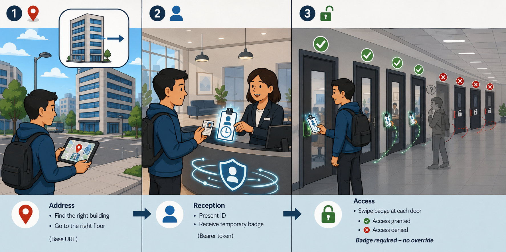
📷 A6.png — add this image to the folder
Flat minimalist cartoon illustration of accessing a secure corporate building used as an analogy for OneAPI authentication. Three sequential scenes arranged left-to-right in one wide composition, depicting the same cartoon visitor at each step. Scene 1 (Address): the visitor stands on a city sidewalk holding a small map/GPS device showing a pin on a tall office building with multiple floors; an arrow points to a specific floor (the base URL). Scene 2 (Reception): the visitor is inside a bright lobby, presenting an ID card to a friendly receptionist behind a desk; the receptionist hands back a glowing temporary visitor badge with a clear expiration clock symbol (Bearer token). Reception desk has 'authenticate' icon swirls around it. Scene 3 (Swipe at doors): a long hallway with multiple doors leading to different rooms; the visitor swipes the glowing badge at each door — green checkmarks appear above unlocked doors. A few other doors are tried without a badge (showing a dim ghosted figure) and remain firmly locked with red X icons, regardless of how confident the person looks. Clean geometric shapes, flat illustration style, bold outlines, soft lighting, simple cartoon characters, no text labels, educational infographic feel, modern tech-analogy aesthetic.
🧠
MENTAL NOTE
3 steps to OneAPI — say them in order: (1) Locate base URL: api.zsapi.net/{product}/api/v1/{resource}. (2) POST to <VanityDomain>.zslogin.net/oauth2/v1/token to get Bearer token. (3) Include Authorization: Bearer {token} in every API request header. These 3 steps apply every time, for every product, every session.
ASK A QUESTION
MY NOTES
💭THINK FIRST · API COMPONENTS
API Client, API Resources, and Access Tokens form a hierarchy — each layer depends on the one above it. Think about the access control implications of each level, and why controlling access at three separate levels (not just one) provides stronger security.
An API Client has "scopes" — specific resources it's authorized to access. Why is it better to create separate API clients for different automation workflows rather than one super-admin client that can do everything?
Access Tokens are JWTs that are "time-sensitive." If a token is stolen by an attacker, what's the maximum damage window — and what design decision built into the token limits that window?
You can revoke tokens from the ZIdentity dashboard. Under what specific circumstances would you need to revoke a token before it naturally expires on its own?
Q1 — MODEL ANSWER
Separate API clients enforce least privilege: a reporting script doesn't need write access to policies, and a policy-update job doesn't need to read user PII. If one client's credentials leak, the blast radius is bounded to whatever scopes that client had — instead of handing the attacker full tenant control. It also makes audit logs meaningful, because you can attribute every action to a named automation workflow rather than to a single shared super-admin.
Q2 — MODEL ANSWER
The maximum damage window is the remaining lifetime in the JWT's exp claim — typically up to an hour. Short expiry is the design decision that bounds the risk: even with the raw token, the attacker can't use it indefinitely, and they can't mint a new one without the original client credentials. That's why JWT-based bearer tokens are short-lived by convention — you trade convenience for blast-radius containment.
Q3 — MODEL ANSWER
You'd revoke before natural expiry whenever you have reason to believe a token is compromised or no longer trustworthy — a developer laptop stolen, a CI/CD pipeline log leaked, an API client's secret accidentally committed to a public repo, or an employee with access to the script offboarded. Revocation is the kill switch that doesn't depend on waiting for the clock to run out; for any breach response, you pull the token first and investigate second.
API COMPONENTS
Exploring OneAPI in Detail
API Client
An API Client is an application that interacts with Zscaler's APIs, facilitating secure communication and integration with ZIdentity. Organisations must create API clients in the ZIdentity dashboard before utilising the API. API clients support public-private keys, client secrets, and JWKs. You control which resources (scopes) each client has access to, with options for super admin, read-only admin, or scoped access per platform.
API Resources
API Resources are specific endpoints that provide access to various identity management functionalities, enabling integration and automation of security-related tasks. In the ZIdentity dashboard you can see the list of all API Resources available for each Zscaler service. Resources within the Zscaler Cloud Service API are limited to specific API groups (e.g., ZIA, ZPA).
Access Tokens
An Access Token is a secure, time-sensitive credential (JWT) used by applications to authenticate and authorise API requests, ensuring only authorised users can access specific resources and perform actions. Access Tokens are JWTs (JSON Web Tokens) required for authentication. The ZIdentity dashboard lets admins view and manage tokens assigned to each API client, including details like expiry, status, and the ability to revoke tokens.
Configuring OneAPI Using Postman
Zscaler offers a Postman collection that simplifies interaction with its OneAPI endpoints, providing preconfigured request scripts, payloads, and essential variables. This collection requires minimal user configuration, making it easy to test and manage API requests.
Step 1: Install the Postman REST API client
Step 2: Set up variables and environment — configure the base URL, client ID, client secret, and vanity domain as Postman environment variables
Step 3: Authenticate a session — use the pre-configured auth request to obtain a Bearer token. Postman automatically inserts it into subsequent requests
★
POSTMAN DEMO
In the demo, the ZCCBase variable is set based on the base URL (api.zsapi.net/zcc/papi/public). The v1/getDevices endpoint is called. The client ID and client secret are loaded in the Authorization section. The call retrieves all devices registered in the tenant, including OTP credentials — iterating through each device's details.
Analogy
API Client, API Resources, and Access Tokens are like a hotel guest's access system. The API Client = your hotel booking record (registered identity). API Resources = which areas you're authorized to use (gym, pool, business center — your specific scope). Access Token = the physical keycard that only works for your stay duration. It expires when you check out — it can't be extended indefinitely without re-registering.
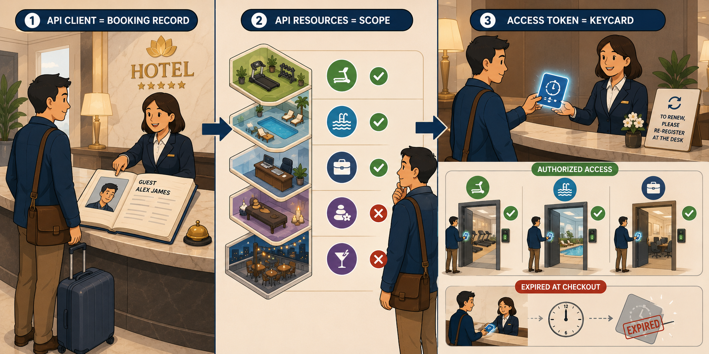
📷 A7.png — add this image to the folder
Flat minimalist cartoon illustration of a luxury hotel guest experience used as an analogy for API Client, API Resources, and Access Tokens. Three connected scenes left-to-right in one wide composition. Scene 1 (API Client = Booking record): a cartoon traveler approaches the marble front desk of an elegant hotel; the receptionist points to a large open ledger book with the guest's name and photo neatly printed (the registered identity). Scene 2 (API Resources = Scope): a stylized hotel map floats beside the guest showing checkmarks next to specific amenities they are authorized for — a treadmill icon for the gym, a wave for the pool, a briefcase for the business center — but red X marks on the spa and rooftop bar (not in scope). Scene 3 (Access Token = Keycard): the receptionist hands the guest a sleek plastic keycard glowing with a small countdown timer/clock icon on it; the keycard works at the authorized doors (gym/pool/business center) which open with green checkmarks, then expires automatically at checkout — visualized by the card fading gray with a red expiration stamp as a checkout clock strikes the time. A small sign on the desk shows that to renew, the guest must re-register at the desk. Clean geometric shapes, flat illustration style, bold outlines, soft lighting, simple cartoon characters, no text labels, educational infographic feel, modern tech-analogy aesthetic.
🧠
MENTAL NOTE
3 OneAPI components: API Client (registered application in ZIdentity, has Client ID + Secret, controls scopes), API Resources (specific ZIA/ZPA/ZDX endpoints accessible to that client), Access Token (time-limited JWT, obtained by exchanging Client ID + Secret at the token endpoint). Postman demo: set ZCCBase = api.zsapi.net/zcc/papi/public/v1, call v1/getDevices.
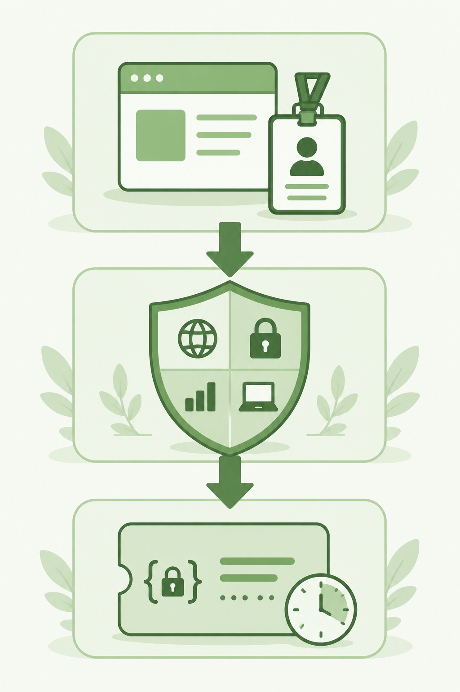
📷 2.png will appear here once you add it to this folder
[Generate: flat green illustration of three stacked horizontal layers — top layer: registered application icon with ID badge (API Client), middle layer: shield with four product logos (API Resources/Scopes), bottom layer: a time-limited JWT card with expiry clock — downward arrows connecting each layer showing the dependency flow, minimalist, no text labels]